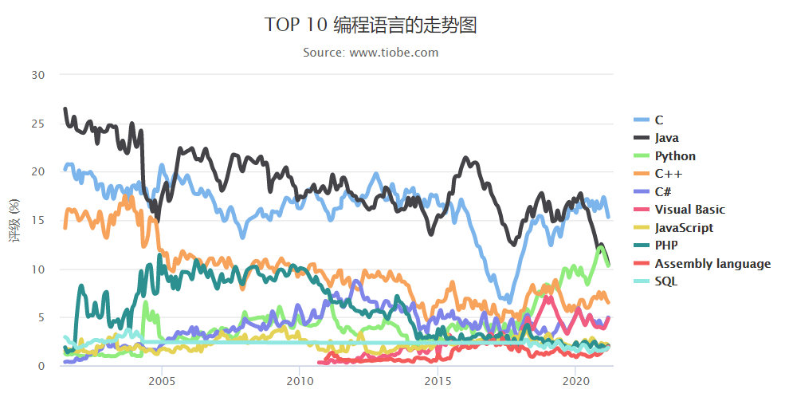

第一章:踏入python之旅

编程语言排行榜（https://www.tiobe.com/tiobe-index/）
Python编程语言稳定在Top3，Python语法简单，是编程语言入门首选，但要精通python语言，就必须扎实的掌握基础。为此总结了python基础的知识点，同时也可以作为二级python程序设计考试备考资料。
Python主要应用领域
WEB开发--Python web框架Django，支持异步并发的Tornado框架，短小精悍的flask，bottle
网络编程--支持高并发的Twisted网络框架，Python3引入asyncio使异步编程变得简单
爬虫
云计算-框架OpenStack
人工智能，数据分析
自动化运维
金融分析
科学计算
游戏开发